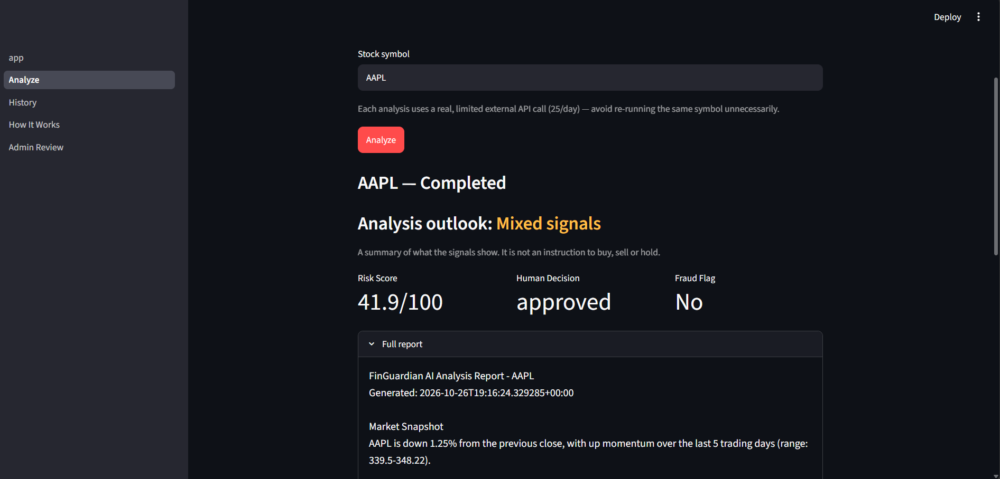

What it does
You give it a stock symbol. It collects what is publicly available, checks it several ways, and writes up what it found.
Reads public data
Recent prices and news headlines from Yahoo Finance (through yfinance) for the symbol you ask about.
Scores what it finds
Volatility and momentum from prices, sentiment from FinBERT, a transparent 0 to 100 risk score, and an anomaly screen from two models, with SHAP showing which inputs mattered.
Stops for a human
If a case looks suspicious, or the two models disagree, the run pauses. An administrator approves or rejects it. The person who submitted a case can't review it, and a rejection always wins over the models.
Explains itself
Every run ends in a plain-English report and an outlook of positive, mixed or negative signals. It describes conditions and never tells anyone what to do with a security.
The pipeline
Each analysis moves through these stations in order. Progress is saved to Postgres after every step, so a paused case survives a server restart and can be resumed later.
-
Data collector
Fetches prices and news, and records the hand-off on a Redis stream.
-
Market analysis
Price change, five-day volatility and range, and momentum.
-
News intelligence
Scores each article with FinBERT, a sentiment model tuned on financial text, and combines the scores.
-
Risk assessment
Combines volatility, sentiment and momentum into a 0 to 100 score with named contributing factors.
-
Fraud detection
XGBoost and Isolation Forest screen for anomalies, and SHAP explains the result.
-
Human review gate
Flagged cases stop here. An administrator approves or rejects them, never the person who submitted them. Clean cases pass straight through.
-
Outlook
Summarises risk, momentum, sentiment and any human decision as positive, mixed or negative signals.
-
Explainability and report
Writes the plain-English report, with the disclaimer attached.
-
Alert and notification
Decides whether to raise a warning or critical alert, records it, and emails it through a background worker.
In the app
The Streamlit dashboard has pages for running an analysis, reading your history, and, for administrators, a review queue of flagged cases from other users.



Run it yourself
There is no hosted version, so there is nothing public to log in to. The whole stack runs on one machine. You need Python 3.11, Docker Desktop, and a free Resend API key. The README lists every environment variable.
git clone https://github.com/Nandini-m05/finguardian-ai.git
cd finguardian-ai
python -m venv venv
venv\Scripts\activate
pip install -r requirements.txt
# create a .env file (see the README), then:
docker compose up -d
alembic upgrade head
# each of these in its own terminal:
uvicorn app.main:app --reload
celery -A app.celery_app worker --loglevel=info --pool=solo
streamlit run streamlit_app/app.pyScope and limits
This is a learning and portfolio project. In India, investment advice and research analysis are regulated activities. This project is not registered with any regulator, charges nothing, and is not offered to the public as a service.
What it is
- An automated analysis of public market data
- A demonstration of multi-agent orchestration, human review and explainability
- Open code you can read and run
What it is not
- Investment advice, a research report, or a recommendation to buy, sell or hold anything
- Personalised: it knows nothing about your goals, portfolio or risk tolerance
- A trading system, or something to base financial decisions on
Limits worth knowing
- The anomaly models are trained on synthetic data created at startup. They have not been validated on real manipulation cases.
- The risk score is a hand-weighted heuristic and has not been backtested.
- Free data sources can be delayed, incomplete or wrong.
- Only large US-listed symbols have been tried.